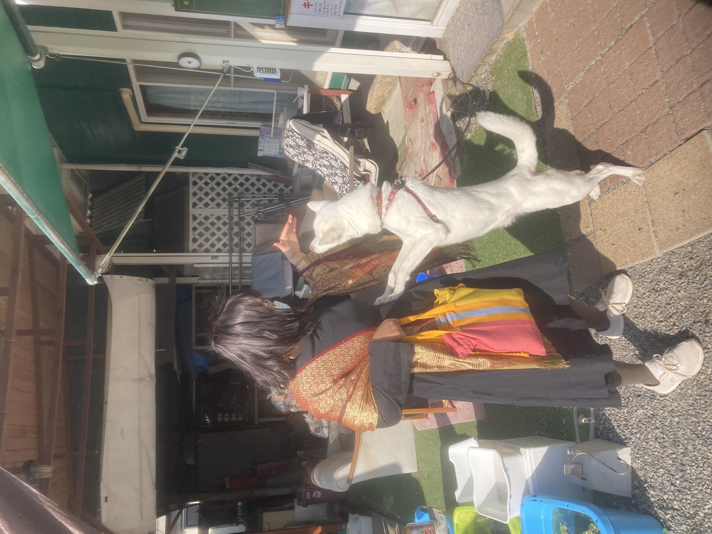
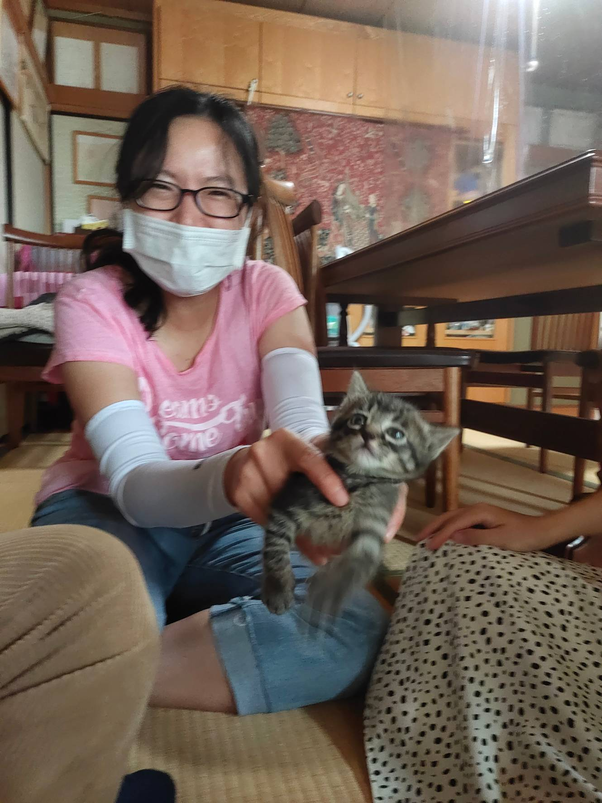

上一章
好像是2019年（反正疫情前），在东广岛广报上知道猫狗让渡会，我好奇但又不敢自己去，叫乐乐一起了。在那里看到アンの時間（安的时间，这个安是我也很喜欢的Anne of Green Gable）。知道他们咖啡店的开放时间后，有次就和乐乐去完教会一起去吃下午茶了，之后好像同一天学校浴衣祭，晚上在乐乐家里吃。我后来还去过两次，最后一次2022年初和花花去，那次还看了狗狗呢。
那里的主人小谷女士，第一次见面就告诉我们很多她自己的事。她已故的丈夫原来是海上自卫队的，很多年前后来脑癌去世，他们没孩子。去世时保险留下很多钱。他们家很大，后来就用钱改建了网球场给外甥外甥女/侄子侄女。后来他们大了，网球场也不用了，就办了猫狗收容中心。她说那里开销很大，四年后就没钱了。现在她有个伴侣，比她小15岁。
入口处
为了纪念她老公，门口这个像就按照他的高度造的。

门口的狗狗热情的迎接客人
屋内很多安妮拼图，看到这些拼图我也买了。淘宝有韩国产的。
第一次去下午茶给了我们三块蛋糕，都是自家制的，咖啡还可以续杯，600日元。她在厨房的时候还跟自己说给我们三块吃不吃得下呢？最后我是吃完了。
后来就去吃午餐了，要预定的，1000日元，很丰富的呢。
吃饭的时候有客人带了在这里领养的狗狗过来
猫屋在二楼，我第一次去时只有乐乐进去，我在门口等她。
第二次的时候我就敢了，不过带了脸罩。
乐乐最喜欢这种照片。
小白和小黄是里面最乖的两位，我也抱过的。
另外一位很乖的小黄。
有时候还有婴儿猫。这个在类似车房一类地方出生，然后车房主人拿过来，还给奶粉钱。


猫屋，里面大概20多只猫。
第一次去的时候没进狗场，乐乐也不敢，我们只在外面看看，当时她们应该5点关门，不过小谷女士招待我们带我们参观都到5点以后了。

后来和花花去的那次，因为有人带，终于敢进了。一开始也是花花先进，我后来才进的，感谢志愿者mm。里面够好多，大概十几只，进去真是不是一般人能做的。
原来狗狗这么好玩！


小谷女士的男朋友很好，拿了零食过来让我们喂狗狗。

它们这个期待的样子好像人。


和小谷女士合照
第一次去应该是2021年7月，我和乐乐吃完蛋糕就去她家吃晚饭，然后参加学校浴衣祭，不过临时因为疫情取消，但我还是穿了浴衣玩了。她的浴衣别人送的，不便宜。
忘了她做的什么饮料
这样捣蒜里面的汁出来，味道特别辛辣。
我们的晚饭
吃完饭去学校拍照


晚上学校的花火。在乐乐家拍摄。
下一章